Olá! Me chamo Victor Lima e sou desenvolvedor, apaixonado por tecnologia, aprendizado
constante e por explorar novas experiências. Sou uma pessoa curiosa por natureza, gosto de
estudar, descobrir coisas novas e entender como as coisas funcionam — seja no mundo da
tecnologia ou na vida.
Sou do litoral de São Paulo, então carrego comigo esse espírito mais tranquilo de quem
cresceu perto do mar. Às vezes estou por Santos, Praia Grande ou Guarujá, e quando aparece a
oportunidade gosto de pegar uma onda e aproveitar o que a praia tem de melhor. Dá pra dizer
que sou bem caiçara nesse sentido.
No meu tempo livre gosto muito de jogar, principalmente FPS, assistir séries e filmes,
conhecer lugares novos e viver experiências gastronômicas diferentes — comer bem é uma das
coisas que mais gosto de fazer. Também valorizo muito o tempo com a minha família, que é uma
das maiores motivações da minha vida.
Sou um cara dedicado, que acredita muito em trabalho, evolução e aprendizado contínuo. Gosto
de desafios, de construir coisas novas e de evoluir tanto profissionalmente quanto
pessoalmente. Para mim, trabalhar com tecnologia é mais do que uma profissão — é uma forma
de criar, resolver problemas e transformar ideias em realidade.
Se quiser conhecer um pouco mais sobre minha trajetória profissional, fique à vontade para
dar uma olhada no meu currículo.
Esse sou eu
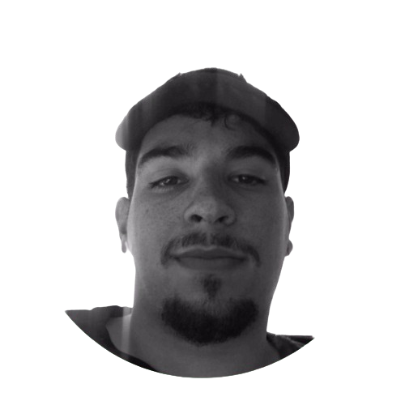
Desenvolvedor de software com 5 anos de experiência no mercado, atuando na criação de aplicações
web modernas e soluções digitais focadas em performance, escalabilidade e experiência do
usuário. Tenho experiência no desenvolvimento de interfaces intuitivas, integração de APIs e
construção de arquiteturas eficientes utilizando tecnologias modernas de front-end.
Sou apaixonado por tecnologia e estou sempre buscando aprender novas ferramentas e
acompanhar as
tendências do desenvolvimento.
Gosto de transformar ideias em soluções funcionais e enfrentar
desafios técnicos que contribuam para a evolução dos produtos e das equipes com as quais
trabalho.
Fora do ambiente profissional, gosto de jogar, passar tempo com minha família,
viajar, conhecer
lugares novos e estar sempre em contato com novidades e tendências do mundo da tecnologia.
Meus Projetos
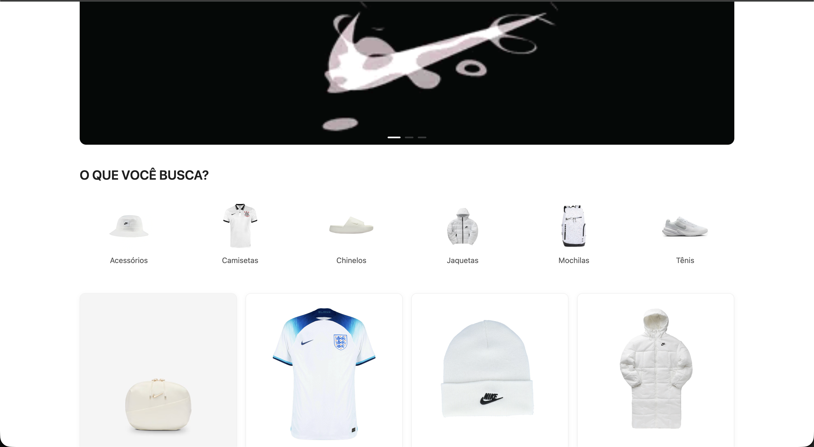
Voke - E-commerce
Projeto feito em React...
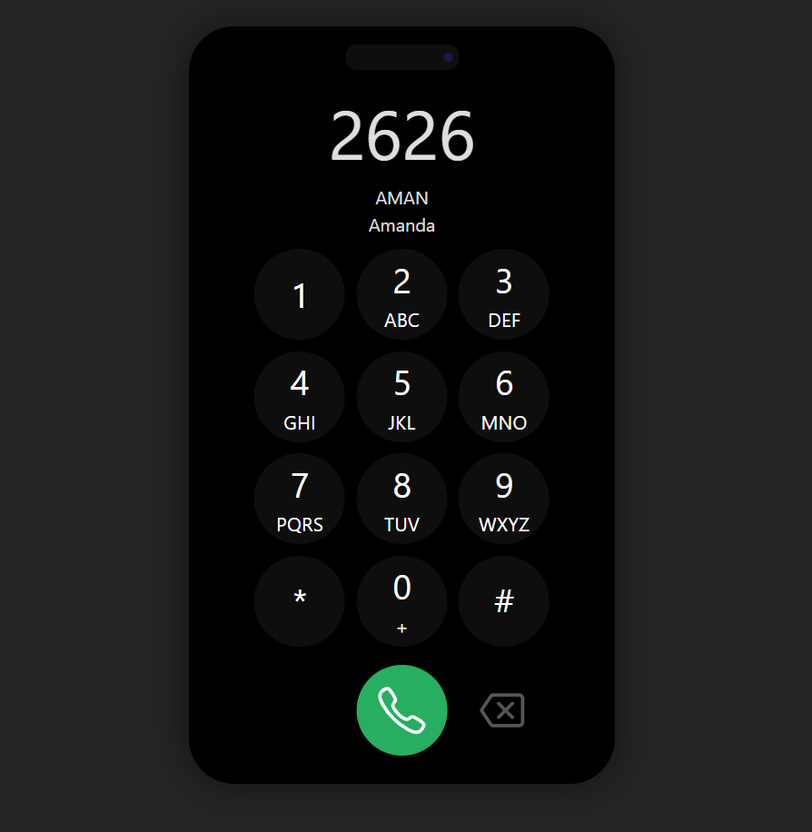
Cell
Projeto feito em Vue.js...
Clientes
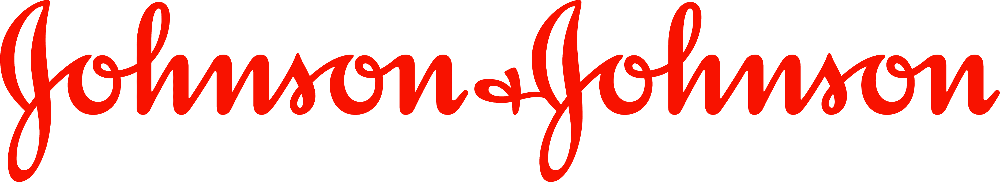
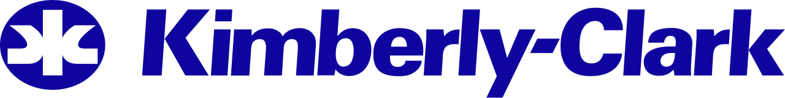
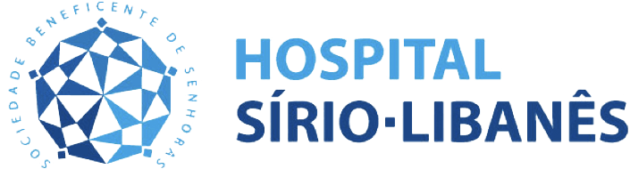
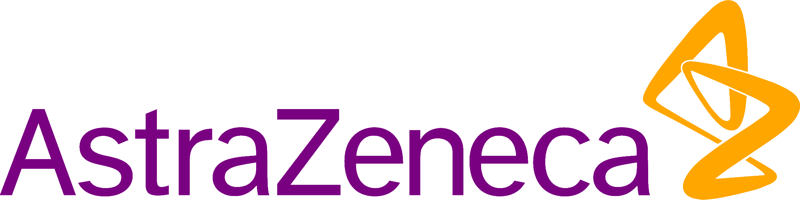
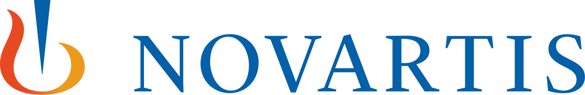
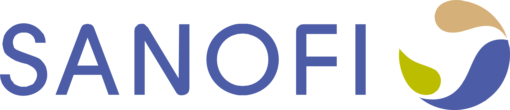
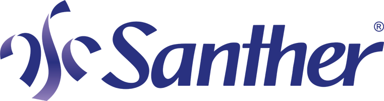
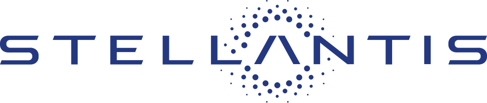